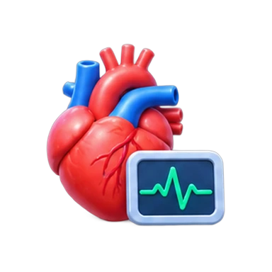
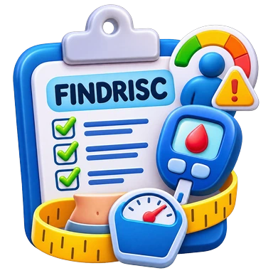
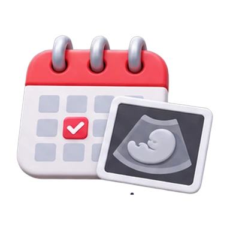
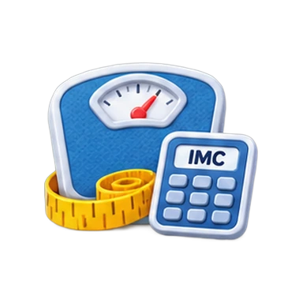
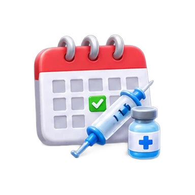
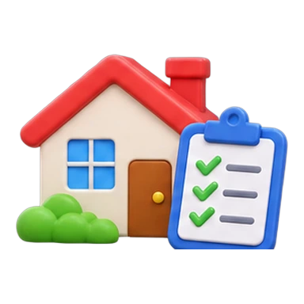
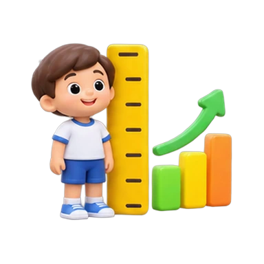
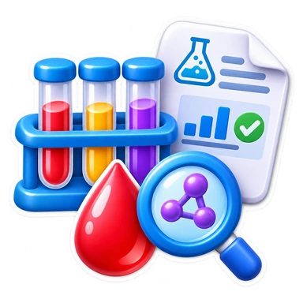
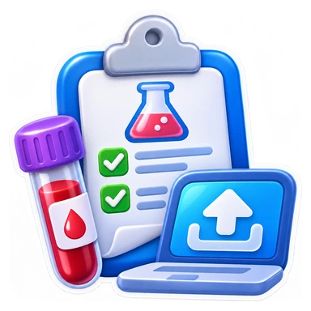

¿Cuál es su especialidad?
Se prepara el menú con las herramientas que va a usar y se puede instalar en este equipo como aplicación. Después puede cambiarlo cuando quiera.
¿Qué especialidad médica?
Cada una ve las herramientas que más le sirven. La consulta asistida está en todas.
Elija una herramienta
Para instalarla: en Chrome o Edge, menú ⋮ → «Guardar e instalar» → «Instalar página como aplicación» (o el icono de instalar de la barra de direcciones).

Registro cardiovascular
Supervisión de enfermedades cardiovasculares y test FINDRISC, con estadísticas, Excel e impresión.
Abrir
Test FINDRISC
Riesgo de desarrollar diabetes tipo 2 a 10 años, con registro, estadísticas, Excel e impresión.
AbrirConsulta asistida
Grabación de la consulta con transcripción en vivo y anamnesis ordenada por IA, con el modelo de cada profesional.
AbrirHerramientas de nutrición
Valoración antropométrica de 0 a 19 años, embarazadas, requerimientos, alimentación y modelos de dieta.
Abrir
Edad gestacional
Edad gestacional y fecha probable de parto por FUM o por ecografía, con los hitos habituales del control prenatal.
Abrir
Calculadora antropométrica
IMC, cintura e índice cintura-talla con gráficos, para consulta rápida o trabajo en terreno.
Abrir
Calendario de vacunación
Qué vacunas corresponden según la edad, el embarazo o el trabajo en salud, con control del carnet.
Abrir
Ficha de visita domiciliaria
Ficha con valoración nutricional de cada integrante: edad en años, meses y días según fecha de nacimiento, curvas OMS de 0 a 19 años, IMC y cintura en adultos, vivienda, vectores, controles y prioridad sugerida. Guarda, imprime en PDF y exporta CSV.
AbrirDesarrollo infantil en la visita
Edad por fecha de nacimiento, dibujo de cómo suele estar a esa edad, qué ya debería haber logrado y qué hacer si no lo logra. Incluye la evaluación completa con el IODI (opcional).
Abrir
Crecimiento y desarrollo
Curvas de peso, talla, IMC y perímetro cefálico, velocidad de crecimiento y Tanner.
AbrirEmbarazo y control prenatal
Edad gestacional por FUM, ganancia de peso (Fescina, IOM), IMC gestacional y requerimientos.
Abrir
Laboratorio
Valores de laboratorio calificados como bajo, normal o alto según edad, sexo y embarazo, con HOMA-IR, LDL, filtrado glomerular, comparación con el estudio anterior e informe en PDF.
Abrir
Laboratorio · Carga de resultados
Para bioquímicas y bioquímicos: cargue los resultados de un paciente con el rango de su laboratorio y adjunte el informe. Requiere código de acceso.
AbrirRecursos para la comunidad
Juegos educativos para ferias y talleres: ruleta saludable, armado de plato, Preguntados de la diabetes y rosco, con registro anónimo opcional.
JugarEl perfil sólo ordena el menú: no limita el acceso. Los registros cardiovasculares quedan guardados en el navegador de cada computadora. Si se conecta la planilla compartida, el DNI y el nombre se guardan sólo en su hoja «Pacientes».